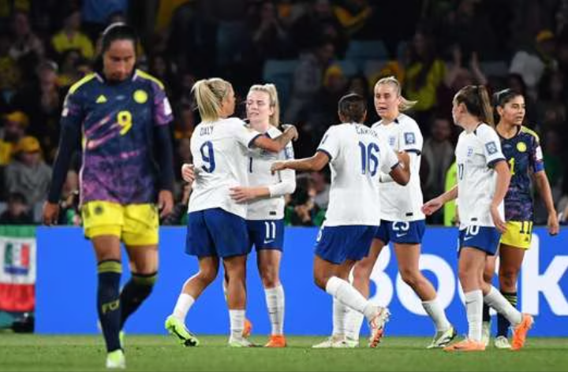
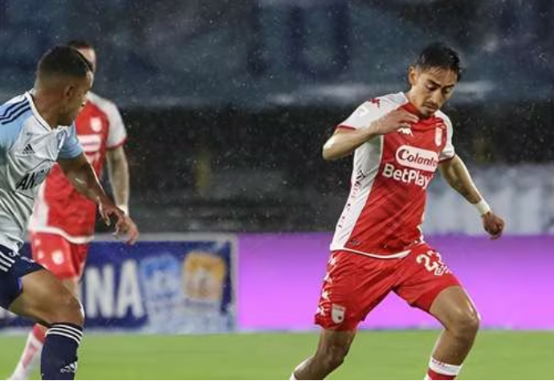
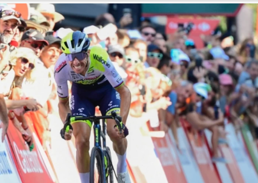
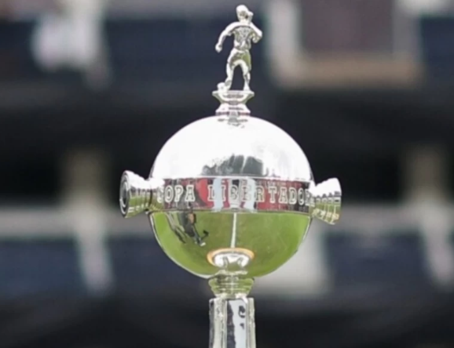

Colombia vs. Chile será el partido de la selección de Néstor Lorenzo este martes. De la jornada se destaca el Ecuador vs. Uruguay en Quito.
Este martes 12 de septiembre, con la segunda fecha de las eliminatorias, continúa el camino sudamericano rumbo al Mundial de 2026, que se hará en Estados Unidos, México y Canadá.
Luego del mundial femenino, España, las campeonas del mundo, no fue la única federación envuelta en polémica por las discrepancias con sus jugadores. Inglaterra, las subcampeonas del mundo, también están en medio de una disputa, aunque piramente económica, pues en este caso no hubo ningún caso de abus sexual.
Resulta que las futbolistas de la selección inglesa aún no han llegado a un acuerdo con la federación inglesa (FA, por sus siglas en inglés) por el reparto de primas en los campeonatos internacionales.
En medio de la lluvia incesante, en un partido fuera de contexto, los leones ganaron un juego caótico en El Campín de Bogotá.
Santa Fe le ganó 4-2 a Millonarios este domingo en la décima fecha de la Liga BetPlay, la jornada de clásicos del fútbol colombiano.
El partido fue caótico. Primero, por el diluvio que cayó durante todo el partido y, después, por las dos expulsiones de Millonarios, en la parte inicial de Macalister Silva (45′) y en el complemento de Daniel Giraldo (47′). Dos rojas justas que cambiaron el curso del compromiso.
Comienza la última semana de La Vuelta a España. Sepp Kuss, de Jumbo Visma, es el líder de la clasificación general.
Dos semanas han pasado desde que la Vuelta a España bajó la bandera en Barcelona, dos semanas en las que la ronda ibérica ha sido fiel a su lema: Pasión y Emoción. Primero los padecimientos (pasión viene de padecer búsquenlo en el diccionario), los primeros días fueron un verdadero calvario para la organización, con feroces temporales, ataques terroristas en Cataluña y accidentes en las llegadas. Pero después de la tormenta vino la calma y la segunda semana resultó plena de espectáculo deportivo, ahora si la Emoción.
La mítica Copa Libertadores que jugará Atlético Nacional cerró su período de inscripción de futbolistas el pasado 8 de septiembre.
En Colombia, apenas un club se ha podido coronar en la mítica Copa Libertadores Femenina, siendo aquel Atlético Huila de 2018; por su parte, en el formato masculino han sido dos escuadras las vencedoras, Atlético Nacional (1989 y 2016) y Once Caldas (2004).
| Equipos | Resultados |
|---|---|
| Myanmar vs Nepal | 1 - 0 |
| Cambodia vs Macau | 4 - 0 |
| Hong Kong vs Brunei Darussalam | 10 - 0 |
| Vietnam vs Palestina | 2 - 0 |
| Equipos | Resultados |
|---|---|
| Ramat Hasharon (Isr) vs Elitzur Ashkelon (Isr) | 73 17 20 22 14 - 86 31 13 14 28 |
| Fenerbahçe (Tur) vs Kapakli Spor (Tur) | 84 23 23 19 19 - 81 25 17 22 17 |
| SCM Craiova (Rou) vs CSM Targu Mures (Rou) | 65 23 12 10 20 - 69 11 12 23 23 |
| Anwil Wloclawek (Pol) vs Wurzburg (Ger) | 74 20 14 19 21 - 81 14 26 18 23 |
| EVENTOS | Fecha |
|---|---|
| Final de la Champions League de fútbol femenino | 3 de Junio de 2023 |
| Final de la Champions League de fútbol masculino | 10 de Junio de 2023 |
| CICLISMO EN RUTA: Tour de Francia | 1-23 de julio |
| FÚTBOL: Copa Mundial de fútbol femenino | 20 de julio-20 de agosto |
| . BALONCESTO: Mundial masculino | 25 de agosto-10 de septiembre. |